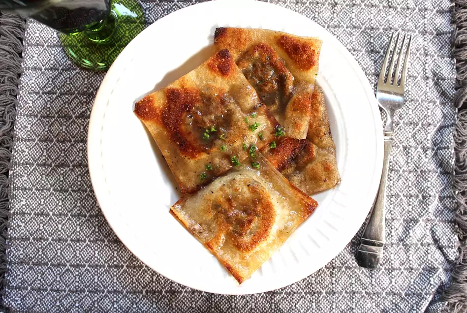

Mushroom ravioli

Description
A delicious meal of mushroom ravioli can be easily made at home with
only a few ingredients.
Ingredients:
- 6 tablespoons butter, divided
- 1 (8 ounce) package fresh mushrooms, finely chopped
- 1½ cups vegetable broth
- 3 cloves garlic, minced
- 3 stalks scallions, chopped
- 1 teaspoon chopped fresh sage, or to taste
- ¼ teaspoon chopped fresh dill, or to taste
- ¼ teaspoon chopped fresh thyme, or to taste
- ¼ teaspoon chopped fresh parsley, or to taste
- 20 (3.5 inch square) wonton wrappers
Steps:
- Heat 2 tablespoons butter in a saucepan over medium heat. Add mushrooms, vegetable broth, garlic, scallions, sage, dill, thyme, and parsley and cook until reduced, about 10 minutes. Separate liquid from mushrooms with a spoon and reserve–this will be your sauce later. The consistency should be thin, and the color should be dark.
- Spoon a small amount of mushroom filling onto one wonton. Take another and seal the two using a fork, wetting the edges with water if necessary. Repeat with remaining wrappers and filling.
- Heat remaining butter in a pan over medium to medium-high heat. Add ravioli and saute until lightly browned, about 5 minutes. Drizzle sauce on top and serve.